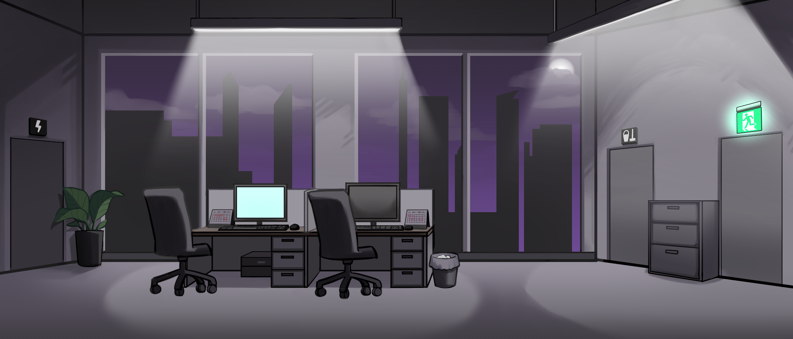
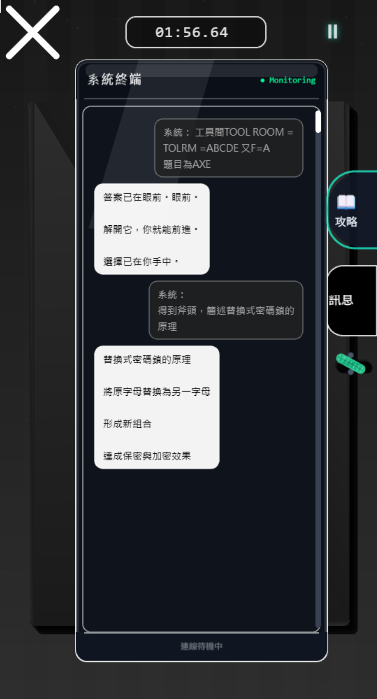
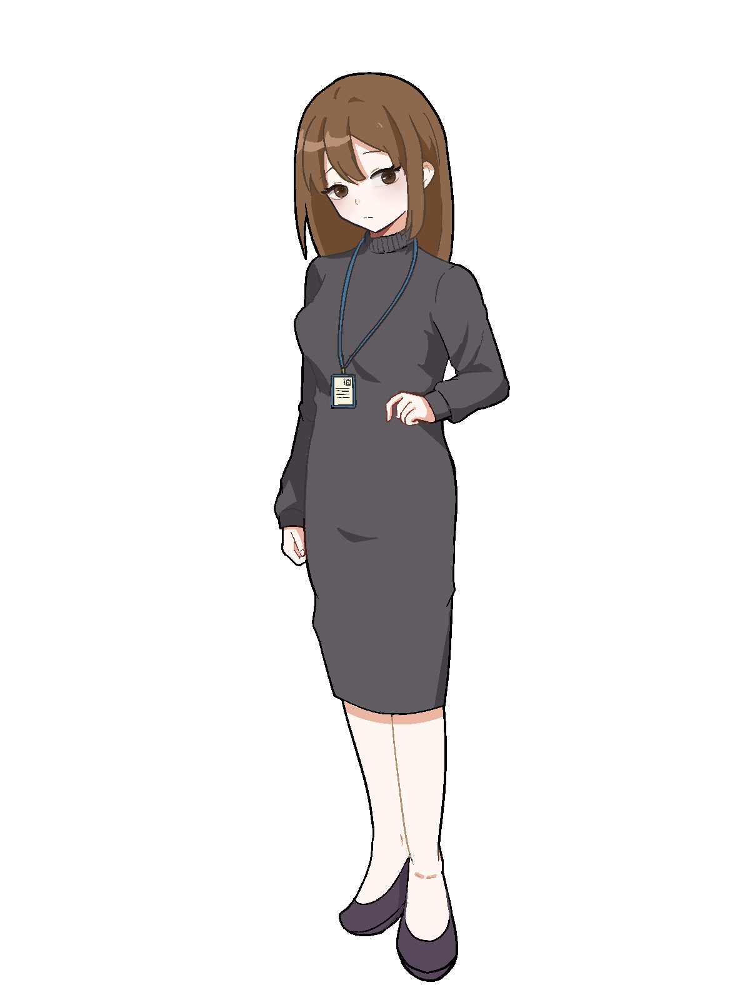
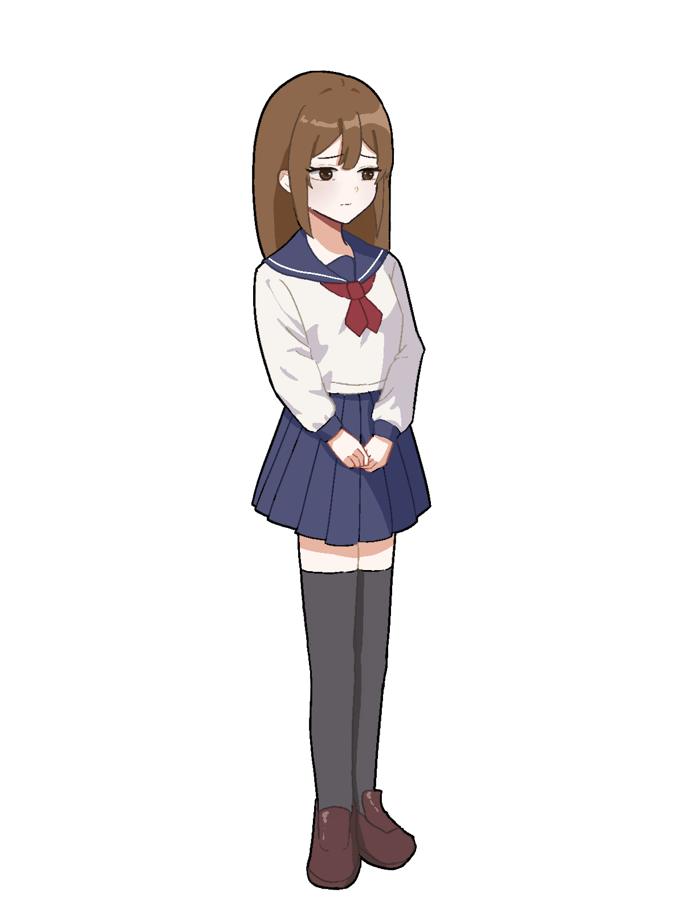
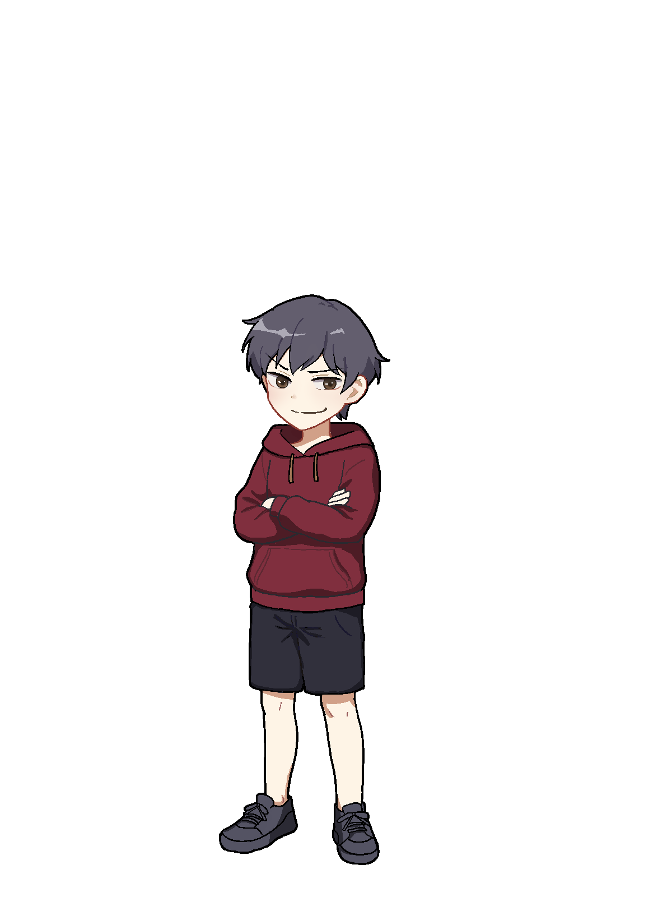

密碼學密室逃脫遊戲
將密碼學學習轉化為敘事式密室逃脫體驗。

Project Info
類型｜教育型遊戲設計
形式｜敘事解謎遊戲
團隊｜四人專案
展出｜TWELF 2026
Concept
本專案為一款結合密碼學學習與敘事解謎體驗的教育型密室逃脫遊戲。 玩家需在限定時間內探索場景、收集線索並破解加密資訊，逐步推進劇情。
遊戲將替換式密碼、凱薩密碼與密碼盤等概念轉化為解謎機制， 讓玩家在遊戲過程中自然理解基本的加密邏輯。
Level Design


Office｜玩家在深夜辦公室醒來，透過解密與工具收集恢復電力並開啟出口。
Classroom｜利用元素週期表與考卷線索，推理解鎖密碼。
Operation Room｜透過醫療紀錄與症狀線索解開最終密碼，並進入不同結局分支。

AI Interaction System
本遊戲導入 AI 輔助互動機制，透過 n8n 建立角色對話流程， 使不同角色具備獨立語氣與提示方式。
玩家在解謎過程中可向角色詢問提示，系統會依角色個性提供不同風格的引導， 將提示轉化為劇情互動，維持沉浸式的遊戲體驗。
Character Design

惠美
冒失，表面積極開朗、話多、機靈，帶點神祕氣息，因為失意而對它的認識變得陌生 偶爾語帶暗示，似乎知道一些主角不知道的事情

惠美高中時期
高中時期的惠美，似乎有著不可告人的祕密

阿暗
個性與主角相反，活潑，善於表達自己的情緒
Team
張凱翔
程式、系統開發
陳昱洋
程式、系統開發
蘇郁鈞
美術設計、場景設計
周書妤(Yuki)
角色設計、文書